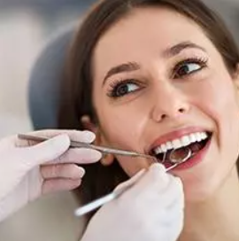

- Periodoncia

La Periodoncia trata todas las enfermedades periodontales producidas por acumulación de cálculo y placa bacteriana. En las clínicas dentales Dentix, contamos con profesionales cualificados con amplia experiencia en tratamientos de periodontitis.
- Ortodoncia

La ortodoncia corrige los defectos de la posición dental para mantener una boca perfecta y sana. En las clínicas dentales Dentix, somos especialistas en ortodoncia y realizamos diferentes tipos de tratamientos para adaptarnos a tus necesidades.
- Endodoncia
Es también conocida como tratamiento de conductos, se refiere a un procedimiento altamente utilizado por los especialistas en odontología para retirar por completo la pulpa dentaria dañada. Contamos con especialistas en endodoncia para que no pierdas tu pieza dental
- Protesis dental

En Dentix te garantizamos que podrás recuperar la comodidad, la sonrisa, y por supuesto el hecho de sentirte seguro y a gusto contigo mismo.
- Implantes dentales

En las clínicas dentales Dentix somos especialistas en implantología dental y disponemos de un equipo de expertos en odontología que cuentan con tecnología de vanguardia para realizar los tratamientos dentales.
- Limpieza dental
La limpieza dental más conocida como profilaxis tiene diferentes funciones como proteger el esmalte y eliminar lo acumulado en los dientes y debajo de las encías, a lo que le llamamos placa dental. Mejora el aspecto de tu sonrisa con una correcta higiene bucal, indispensable para mantener una boca sana y bonita.
- Caries

La caries dental es la afección bucal de mayor incidencia y prevalencia en el mundo, puede producirse por bacterias, azúcares, entre otros. El tratamiento de caries nos ayudará a hacer una limpieza dental que mejore tu salud bucal.
- Ortodoncia invisible

La ortodoncia modifica la posición de las piezas dentales, pero a veces, los brackets o frenillos convencionales pueden resultar molestos o no gustar estéticamente. Por ello, en clínicas Dentix, sumamos a nuestros tratamientos la ortodoncia invisible, una manera casi imperceptible de corregir tu sonrisa.
- Blanqueamiento dental

El blanqueamiento dental es un procedimiento de odontología estética que busca un aclaramiento mediante la eliminación de manchas dentales. Para poder blanquearlos, existen diferentes tipos de tratamientos que nos devolverán el buen color a nuestra sonrisa.
- Estética dental

Cada vez son más los pacientes que se preocupan por tener una boca sana, además de una bonita sonrisa. Los tratamientos de estética, suministros y servicios dentales pueden ser combinados entre ellos, si es necesario, para conseguir el mejor diseño dental.
- Diseño de sonrisa

Sabemos la importancia de una sonrisa y por eso entendemos que el diseño de esta debe ser acorde a lo que quieres acompañado por un buen ortodoncista. La sonrisa es para la mayoría de las personas la mejor carta de presentación que puede existir y si tienes un buen dibujo de sonrisa puedes sobresalir